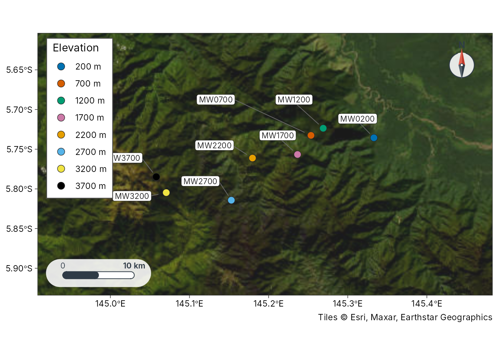
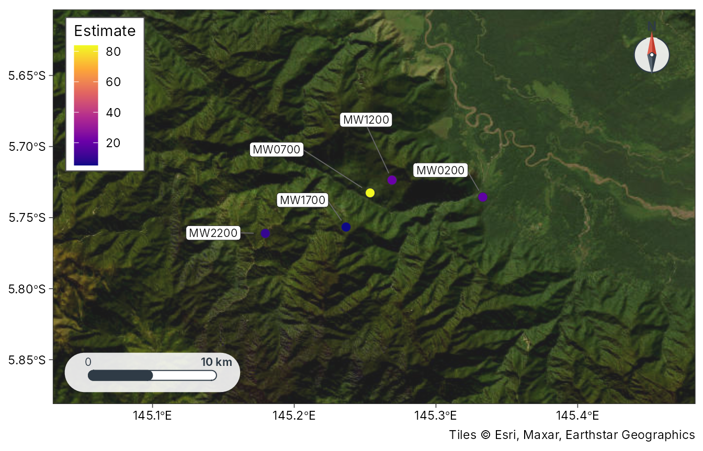

Getting started with tidymapr
tidymapr.Rmdtidymapr is the mapping companion to tidydiversity.
Every verb takes a data frame and returns a tibble, an sf
table, a SpatRaster or a ggplot, so diversity estimates and
maps stay in one tidy workflow, in the same way dplyr and ggplot2 work
together.
Study sites
geo_example_sites() returns the published bait GPS of
the Mt Wilhelm ant survey behind tidydiversity::png_ants
(png_ants_sites; Mottl, Moses and Klimes 2023, doi:10.5281/zenodo.8191946),
one point per elevation band.
sites <- geo_example_sites("wilhelm")
sites
#> # A tibble: 8 × 6
#> site lon lat elevation elevation_band coordinate_note
#> <chr> <dbl> <dbl> <int> <fct> <chr>
#> 1 MW0200 145. -5.74 200 200 m published bait GPS, doi:10.5281/z…
#> 2 MW0700 145. -5.73 700 700 m published bait GPS, doi:10.5281/z…
#> 3 MW1200 145. -5.72 1200 1200 m published bait GPS, doi:10.5281/z…
#> 4 MW1700 145. -5.76 1700 1700 m published bait GPS, doi:10.5281/z…
#> 5 MW2200 145. -5.76 2200 2200 m published bait GPS, doi:10.5281/z…
#> 6 MW2700 145. -5.81 2700 2700 m published bait GPS, doi:10.5281/z…
#> 7 MW3200 145. -5.80 3200 3200 m published bait GPS, doi:10.5281/z…
#> 8 MW3700 145. -5.78 3700 3700 m published bait GPS, doi:10.5281/z…plot_sites() draws a publication-ready study-site map
with a scale bar and north arrow.
plot_sites(sites, lon, lat, colour = elevation_band, label = site)
Sites as sf and distances
geo_as_sf(sites, lon, lat)
#> Simple feature collection with 8 features and 6 fields
#> Geometry type: POINT
#> Dimension: XY
#> Bounding box: xmin: 145.058 ymin: -5.81424 xmax: 145.333 ymax: -5.72361
#> Geodetic CRS: WGS 84
#> # A tibble: 8 × 7
#> site lon lat elevation elevation_band coordinate_note
#> * <chr> <dbl> <dbl> <int> <fct> <chr>
#> 1 MW0200 145. -5.74 200 200 m published bait GPS, doi:10.5281/z…
#> 2 MW0700 145. -5.73 700 700 m published bait GPS, doi:10.5281/z…
#> 3 MW1200 145. -5.72 1200 1200 m published bait GPS, doi:10.5281/z…
#> 4 MW1700 145. -5.76 1700 1700 m published bait GPS, doi:10.5281/z…
#> 5 MW2200 145. -5.76 2200 2200 m published bait GPS, doi:10.5281/z…
#> 6 MW2700 145. -5.81 2700 2700 m published bait GPS, doi:10.5281/z…
#> 7 MW3200 145. -5.80 3200 3200 m published bait GPS, doi:10.5281/z…
#> 8 MW3700 145. -5.78 3700 3700 m published bait GPS, doi:10.5281/z…
#> # ℹ 1 more variable: geometry <POINT [°]>
head(geo_distance(sites, lon, lat, site = site))
#> # A tibble: 6 × 3
#> site_1 site_2 distance
#> <chr> <chr> <dbl>
#> 1 MW0200 MW0700 8802.
#> 2 MW0200 MW1200 7212.
#> 3 MW0200 MW1700 10931.
#> 4 MW0200 MW2200 17211.
#> 5 MW0200 MW2700 21767.
#> 6 MW0200 MW3200 30031.Diversity on a map with tidydiversity
Load both packages and pipe diversity estimates straight onto a map.
library(tidydiversity)
est <- div_estimate(png_ants, q = 0, nboot = 0, .by = season)
est <- dplyr::left_join(est, sites[c("site", "lon", "lat")], by = "site")
plot_geo(est[est$season == "dry", ], estimate, lon, lat, label = site)
geo_decay() joins geographic, elevational or
environmental distances to tidydiversity::beta_pair() so
tidydiversity::beta_decay_model() can fit distance-decay
models.
See the article “Geospatial diversity workflows” for rasters, occurrence cleaning, basemaps, bioclim layers, stem maps, spatial eigenvectors and species distribution models.